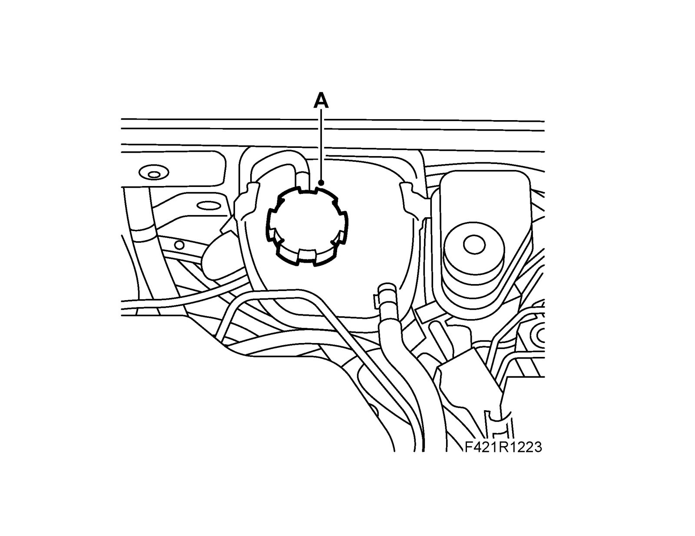
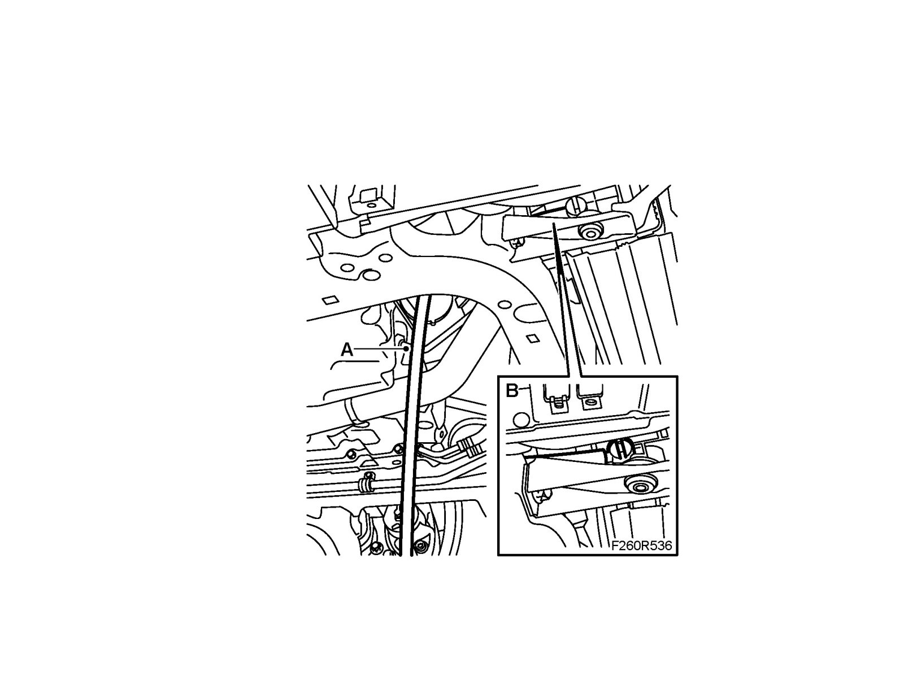

Draining, Cooling System
Draining, cooling systemWarning
The cooling system is under pressure. Hot coolant and steam can escape.
- Open the cap slowly to release the pressure.
- Carelessness can cause eye and burn injuries
1. Take the cap off the expansion tank to release any pressure.

2. Raise the car.
3. Undo the right-hand side of the spoiler shield.
4. Place a suitable receptacle under the radiator. Connect a hose (A) to the radiator (B) and drain the coolant by opening the cock. Close the cock when the flow stops.
